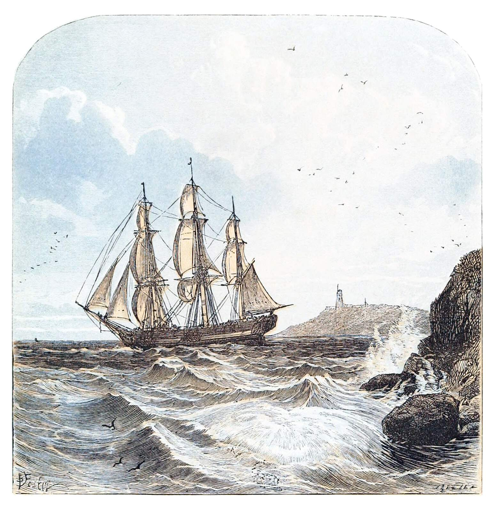

New Year's Self-Reflection: Resolutions Revolutionized
New Year's Resolutions are ephemeral. Self-reflections chart your course for a journey. Let's revolutionize our resolutions with purposeful reflection.
Around late November to after New Year's Day is a time of purposeful reflection for my friends and I. We dedicate time to consider what we are thankful for, the difficulties we've faced, our achievements, where we are, and where we choose to go in the new year. All this with an ample amount of answering the question, "Why?"! We've been self-reflecting and discussing every new year for the past three years, making this upcoming new year our fourth.
I want to share our process with you.
This is actually the first post I originally intended for this blog, but I never got around to writing it beyond my notes. To keep with my trend of participation in community blogging events, I have decided to submit this as a late submission to the November Indie Web Blog Carnival hosted by Alex Sirac with the theme "Cycles and Fluctuations". Feel free to read what others have wrote, and to consider partaking in future blog carnivals. Community is important, as I'll expound upon here.
Self-Reflect
The key questions to ask yourself are
- Where am I now?
- How did I get here?
- Where do I want to go?
- Why? What are the base elements I want?
- How do I get there?
- What are small steps I can regularly take to get there?
The following are the expanded questions my friends and I ask ourselves. It is a more detailed version of the above to help ensure our answers have adequate coverage of aspects of our lives and encourages acknowledging the good and our achievements. Not all of us answer every question. The core questions above are the most important, and the fact that you set aside time to self-reflect in your hectic life is already an achievement.
Past year reflection
- Memories of the past year
- What were some of your positive memories?
- Some of your negative memories?
- What did you accomplish this past year?
- What did you learn?
- How did you grow?
- What were your goals or themes for this past year?
- Did you have fun, enjoy, or are otherwise satisfied in general with the past year? Why?
Where you are now?
- Where are you with respect to ...
- Health
- Physical, e.g., nutrition & exercise
- Mental (spiritual too, if desired)
- Social / relationships
- friends, family, in general (strangers & acquaintances), romantic, and work
- Hobbies
- Work, e.g., occupational / career, knowledge, skills / craftsmanship, work relationships
- Health
- Who are you? What do you do regularly?
- How do you feel about this person?
- How do you feel about where you are in life?
Where do you want to go or what do you want to do in this upcoming year?
- What in the world would you want to see changed?
- What calls to you or what do you have fun doing?
- Is there anything you could and would like to do that attempts to actualize, at least in part, your answers to the above two questions together?
- Who do you want to be and why?
- What does that person do daily, weekly, and otherwise regularly at what intervals?
- What areas of life are your focus or interest?
- Address those areas with the above questions, where were you, where are you, where do you want to go, and why? Any plans on how?
Mull it Over and Discuss
The duration of a month and some time to self-reflect off-and-on is also important. Purposeful self-reflection takes time and effort. You have to sit there and look yourself in the metaphorical mirror as you ask and attempt to answer some hard questions. Something quite uncomfortable for some, if not most.
And sometimes we just don't have answers in the moment. So its worth asking these questions and mulling them over time.
Discuss with your loved ones.
Fundamentally, self-reflection is about you. It's a very personal thing. The most important is you self-reflect. It's up to you if want to share and your right to set a boundary if not.
If you have close friends or loved ones you trust and you all decide to self-reflect and share, that can be quite a beautiful thing!
A group of people that come together frequently and discuss such things or other hobbies and interests is a wonderful thing to have. For my friends and I, this started in one of our productive groups that would meet regularly and talk work and hobbies. We share our burdens and seek guidance from each other. This is an incredible support in our lives that each and everyone of us knows we are fortunate to have.
As the person who initiated it, I can tell you that someone has to kindle that metaphorical communal hearth for the rest to gather around. Fortunately, it is a cooperative endeavor, so you won't have to do it alone once it's started. I often hear people say they feel so disconnected, yet we live in a world that was never more connected than it is now. This is indicative that loneliness or disconnection is not determined by one's locality or potential to communicate. This is perhaps a topic for another post, although I will say here, that to communicate takes energy, and it can be so very worth it.

Sail Your Charted Course
I started this whole process for myself because I was at a low point all those years ago. I realized that I wouldn't go where I wanted to or live the life I wanted to if I did not self-reflect on "What is that life?", "Why that way of living?", "What are the key parts of that life I want to live?", and "What are the small steps to get there?".
I realized those small steps could be started today.
The days around the New Year is naturally a self-reflective time. Resolutions are a trend that attempt to change course, but without the understanding of how those steps take you to where you want to go, or why you even want to be there. Without that, we flounder to maintain our resolutions, especially once the habits we are trying to build become grueling.
Knowing how and where those small steps take you, and why you want to go there, solidifies your motivation.
And once motivated... do.
This applies before and after New Year's day. The only moment is now, and if you believe doing something now is something you can afford and will take you to the place you want to go, then perhaps it is time to put one foot in front of the other.
Adapt as Necessary
Self-reflection is not only for the new year or some other time on the calendar. It is important to self-reflect every now and then to ground yourself and reorient your direction as desired.
Some long-term things you wanted in the past, may not be what you want today or for the long-term going forward. There will of course be days when we do not want to stick to the plan. When we do not want to get up on time, to go to the gym, to watch what we eat, to not fulfill that traditional New Year's Resolution.
And that is perfectly natural.
When you are faced with a strong internal resistance to do something, that is precisely an indicator of its time to self-reflect, if you have not already. Sometimes, we have to accept short-term discomfort to satisfy our long-term objectives.
Build up your pain tolerance, but don't neglect your wounds, lest they fester.
If that short-term discomfort is recurrent, it is important to have the answer to if you want to accept that discomfort in the long run. Then your decisions in the moment will at least be informed on what you want.
And it is important to recognize that not every day need be perfectly executed! You can make mistakes. You're human. That's actually entirely natural, beyond humanity! The scientific process, adaptation, learning, all consist of making a hypothesis and testing it. Then take the information from that experience to better do what you want next time.
Conclusion
We have the power of choice to take action now, to take a break for a day and come back stronger tomorrow, or to reflect and reorient ourselves. This is the cycle of growth and the fluctuations of living.
I hope you're doing well and I wish you smooth sailing upon those reflective waters.